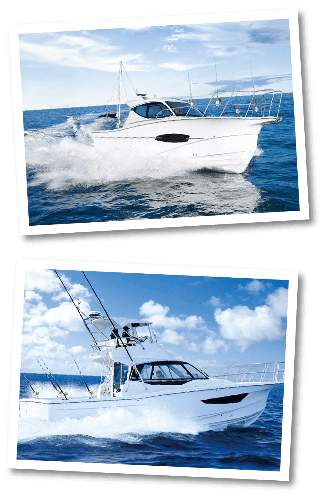

Company profile会社案内
| 社 名 | 株式会社 師崎ヤンマー商会 |
|---|---|
| 代表取締役社長 | 中村 英機 |
| 設 立 | 昭和30年10月21日 |
| 創 業 | 昭和23年3月 |
| 資本金 | 1000万円 |
| 従業員数 | 28名 |
| 本 社 |
愛知県半田市有楽町6-108 TEL (0569)23-1571 FAX (0569)23-1573 |
| 師崎支店 |
愛知県知多郡南知多町大字片名字新師崎14-1 TEL (0569)63-0065 FAX (0569)63-0165 |
| 第2工場 | 愛知県知多郡南知多町片名漁港内 |
| ドック | 愛知県知多郡南知多町師崎漁港内 |
| 三河支店 |
愛知県碧南市港本町1-1 TEL (0566)42-7700 FAX (0566)42-4593 |
| 業務内容 |
船舶・船舶用エンジンの販売及び修理並びにメンテナンス 船舶用関連機器の販売及び修理 マリンギア販売 各種検査代行 |
| 取扱メーカー | ヤンマーパワーテクノロジー特約店、トヨタマリン正規販売店、 ヤマハ発動機取扱店、ホンダマリン取扱店、スズキマリン取扱店 |
| 取引銀行 | 三菱UFJ銀行、みずほ銀行、知多信用金庫、中京銀行、 愛知県信用漁業協同組合連合 |
| 加入団体 | 中部舶用工業会、中古艇事業推進協議会、(社)日本舶用機関整備協会、舶用中古機関査定委員会、中部マリン事業協会 愛知県舶用機関整備業協会 他 |
Company history会社沿革
| 昭和23年3月 | 愛知県南知多町にてサカエ鉄工所を創業。 |
|---|---|
| 昭和23年4月 | ヤンマーディーゼルと取引開始。 |
| 昭和30年10月 | 株式会社師崎ヤンマー商会へ資本金3,000千円にて改組。 |
| 昭和33年 | ヤンマーディーゼル取引10年にて金バッジ授与。 |
| 昭和34年 | ヤンマーディーゼル舶用全国大会にて売上日本一になる。 |
| 昭和35年 | 2年連続舶用全国大会で優勝。 |
| 昭和36年 | 3年連続舶用全国大会で優勝し優勝旗を拝受する。 |
| 昭和41年3月 | 本社を半田市に移転。 |
| 昭和43年 |
ヤンマーディーゼル舶用全国大会で準優勝。 ヤンマーディーゼル取引20年。 |
| 昭和45年 |
半田税務署より優良申告法人として表敬書を授与 以後、現在に至るまで毎回授与。 |
| 昭和53年 | ヤンマーディーゼル取引30年にて金杯（中杯）を授与。 |
| 平成2年 | マリンレジャー部門設立。以後順調に売上を伸ばす。 |
| 平成4年11月 | 資本金を10,000千円に増資。 |
| 平成5年12月 | 師崎支店を新築。 |
| 平成6年6月 | 中村嘉彦 代表取締役社長に就任 |
| 平成9年3月 | 南知多町片名漁港内に第2工場を新設。 |
| 平成11年 | ヤンマーディーゼル取引50年にて金杯（大杯）を授与。 |
| 平成11年 | トヨタマリンと取引開始。正規販売店となる。 |
| 平成11年5月 | 中村嘉彦 愛知県舶用機関整備業協会 会長に就任 |
| 平成17年12月 | 三河支店を設立。 |
| 平成24年6月 | 中村英機 代表取締役社長に就任 |
| 平成24年7月 | 南知多町師崎漁港内にドック開設 |
| 平成30年 1月 | 三河支店 新社屋落成 |
| 平成31年 4月 | ヤンマー取引70年にて金杯（特大杯）を授与 |
| 令和元年 7月 | 中村英機 愛知県舶用機関整備業協会 会長に就任 |

Recruitment採用情報
| 募集職種 | 技術職 |
|---|---|
| 業務内容 | エンジン修理工、溶接旋盤 |
| 求める能力 | 積極的で自己啓発力、自己管理力のある方 |
| 応募資格 |
18歳以上 業界経験者歓迎 普通自動車免許（AT限定不可） |
| 給 与 |
当社規定優遇［基本給＋各種手当］ ※現行年収も考慮いたします。 |
| 休 日 |
毎週日曜日、祝日、指定休日（月2回） 夏期・年末年始 |
| 勤務時間 | 8：00～17：00 |
| 待 遇 | 別途相談 |
| 勤務地 |
・師崎支店 愛知県知多郡南知多町大字片名字新師崎14-1 ・ 三河支店 愛知県碧南市港本町1-1 |
| 福利厚生 | 団体保険、財形貯蓄、社員旅行等 |
Contactお問合せ
以下のフォームに必要事項をご記入の上、「送信確認」ボタンをクリックしてください。